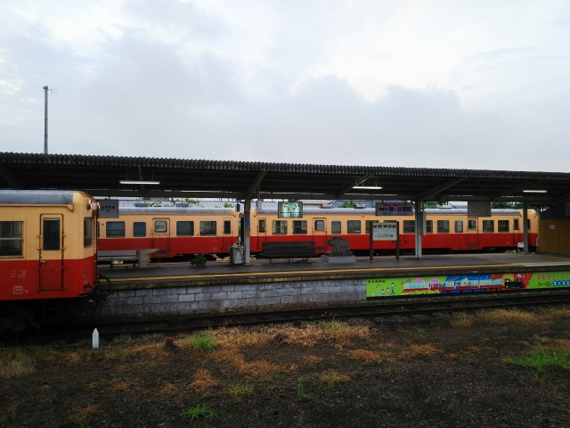
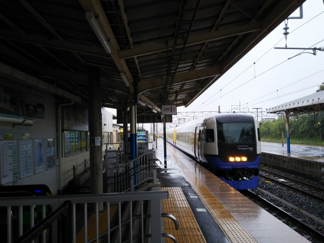
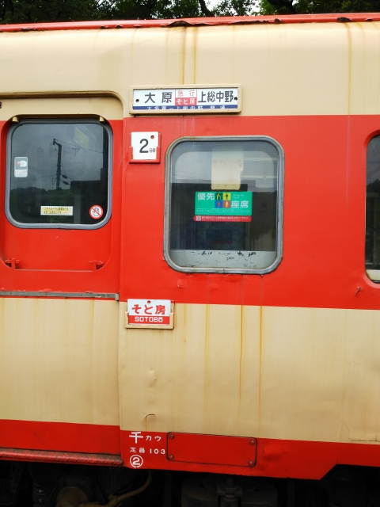
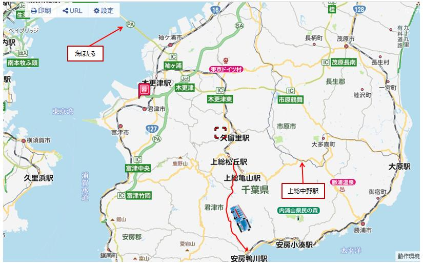
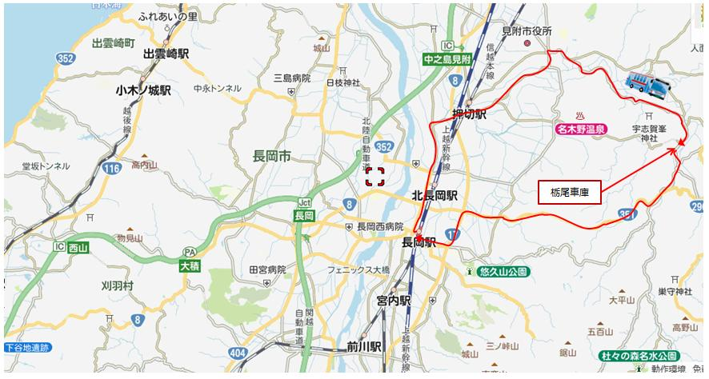
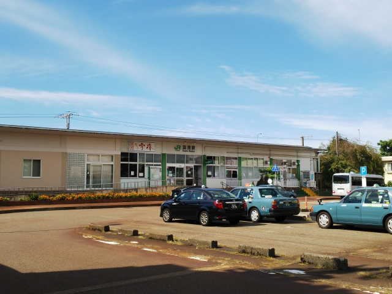
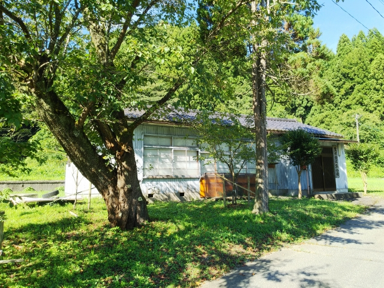
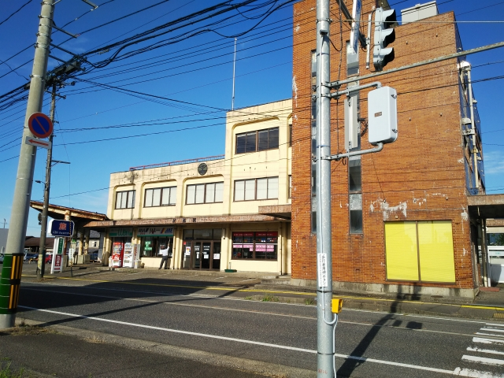

2022（R4） 8月27日～29日 千葉の鉄道めぐり＆華報寺温泉
リフレッシュ休暇以来、怒涛の旅続きで疲れてましたが、この夏を締めくくるにふさわしい充実した旅となりました。

さて、ここは浜松駅です。長年東上中のロングシー
トの車内で昼を食べてましたが、さすがに嫌になっ
てきました。駅そばの昼食は久々やなぁ。
いかにも東のだし、という色合いでしたが、味はそ
れほど濃くなく、いけました。
かけうどんにかつおぶしが入ってるって、珍しいな
ぁ。
浜松から先も、相変わらずのボロ電。もうわかってましたよ。今回は、事
前に元セントラルライナー車の運用調べて、私が東上する時間には動かん
ことを。
大船出たあたりで、線路に人が入ったとかなんとか
で遅れるかも、というアナウンスがあってちょっと
イラつきましたが、時間通りに川崎到着。
縁のない、親会社のビルも写ってるかな？
バスに乗りこみ、貨物線の横を通ったりして地下ト
ンネルに入ってしばらくすると、進行方向に光が・
・・

じゃじゃ～ん！海ほたるに到着です。
なんか、人の気配があんまりないけど・・・
そりゃそうか、バスで来るヤツなんてほとんどおら
んよな。
上に上がっていくと、観光客もたくさんいてました。
こっちは川崎側です。先にみえるタケノコみたいな
やつは、「風の塔」という換気口だそうです。
天気も良くて、スカイツリーも見えました。
こっちは木更津側。
しかし思ってたよりデカいっすね。レストランもた
くさんありました。
といいつつ、次のバスまで１時間、店に入るわけで
もなく、海をみながらボーッとしてました。
ちなみに、今回、図書館で借りた大事な道路地図を
家に忘れるという大失態を犯してしまっていて、途
中で高い地図を買わんといかんので、超節約モード
になってます。
最初は木更津行のバスなので素直に木更津で降りよ
うと思っていたのですが、ひとつ前の袖ヶ浦で降り
てもＪＲの駅は近いとスマホの検索で出たので、迷
わず安くなる袖ヶ浦のバス停で降りました。
そしたらなんと！ウソばっかり！！駅まで３０分も
歩かされるはめに。
袖ヶ浦・・・。袖岡＆浦田か。縁起の悪い地名や。
二度と降りへんからな。
今日は五井に宿泊。
クロスシート車両が来たから許したるわ。
五井に到着。
五井といえば小湊鉄道。
あれ？キハ４０になってんの？？
翌日。
今日は千葉のローカル鉄道に色々乗って行きます。

改めて小湊鉄道のホーム。
小湊オリジナルの編成が停まってますね。
見た目はこっちのほうが綺麗っすね。
ちょうど乗る列車が来ましたが、新しい車両のくせ
に塗装汚いなぁ。
木更津に到着。
まずは久々に久留里線に乗ってみます。前回乗った
時の記憶は全くございません。
かなりの赤字路線なので、首都圏ですが廃止の可能
性ありです。
味気ないロングシートの新しい車両に１時間ほど乗
ると、終着です。
天気予報は終日雨。でも五井は降ってなかったのでラッキーと思いました
が、とうとう降ってきました。

駅前の店はとうの昔に閉まってる感じで、駅周辺に
は何もありませんでした。
もちろん無人駅です。
新しい車両と不釣り合いっすね。
折り返しの列車で引き揚げます。
といって木更津まで戻ったら、目的地にたどり着け
ません。
一日に１回、バスで外房エリアに乗り継げる時間が
ちょうど今！という偶然。
上総松丘駅での接続は５分ほど。駅の横の道にバス
停があるものの、地図を見ても駅から道路に出る道
がなく若干不安でしたが、ホームの端からけもの道
っぽい道があってなんとか間に合いました。
※「通らないでください」と書いてる看板があった
ような気が・・・
安房鴨川駅に到着。
もっとリゾート感あふれる所かと思ってたら、そう
でもないです。
駅前のバス乗り場も、昭和っぽいですね。
この駅が内房線と外房線の境です。
車両も違いますね。左側がこれから乗る外房線です。
房総の海を眺めながら、大原駅に到着です。
途中から結構乗ってきて、立ち客もでるほどになっ
たのには驚きました。
いすみ鉄道の列車が停まってます。

しかし駅に着いたらとんでもない大雨！
運転見合わせにならんか、どきどきしました。
ようやく小ぶりになったので、駅舎の写真を撮影。
いすみ鉄道は元国鉄木原線のはずですが、駅舎が別にありました。
グッズをようさん売ってました。
悪天候にもかかわらず、単行の車内は満員でした。
７割がた、マニアでした。
途中の国吉駅にはキハ３５が停まってました。
驚いたことに、そこで駅弁売りが乗りこんできまし
た。
かなり汚れの目立つ、列車の形をしたかぶりもんが
哀しかったっす。
沿線最大の駅、大多喜駅。ここで乗り換えになりま
す。
車庫もここにあって、歩いて行くと、おぉ！お目当
ての国鉄型車両が停まってます！
いいっすね～。
ちなみに右側は、なんちゃっての新しい車両です。
（浦さん、見たんはもしかしてなんちゃってのほう
では？）
この国鉄型、土日祝しか運行してません。今日の国
鉄型一番列車はここ大多喜発。
いよいよホームに入線します。
２両編成で、大原側が急行型のキハ２８です。
この車両も１１月で定期運航終了とのことで、あれ
だけ走ってた急行型気動車もその歴史に幕を下ろし
ます。

スイッチバック方式で入線します。
みんなカメラを向けてます。そんなに人気あるんす
ね。

サボは国鉄時代に忠実に作ってますね。。
サボにうるさい岩佐模型さんも、納得でしょうか？
車内には国鉄時代のポスターが吊られてて、嬉しい
驚きでした。
ナイスミディのポスター、覚えてるわ。
キハ２８はレストラン列車として運行してるので、
ワンボックスの半分の椅子しか座れません。
で、進行方向と逆向き側しか座れませんでした。と
ほほ・・・
この車両は高山線から来たそうです。
３０分ほどキハ２８とキハ５２の走行を楽しんでた
ら終着の上総中野に到着です。
２両編成でほぼ満席でした。 このあと、無情にも雨が降ってきました。

浦さんの報告通り、この小さな駅でもＷｉＦｉが使
えます。
家に居場所がないのか、じじいがイヤホンもせずネ
ット動画を見ていて、めちゃめちゃ迷惑でした（キ
レてないっすよ）
でも、もしかしたら１０年後の私の姿かもしれませ
んね
この上総中野駅は珍しい駅で、手前側が小湊鉄道の
線路になってます。
国鉄駅の横に私鉄の線路が並んでる姿はよく見かけ
ますが、両方向から来た別々の鉄道が終着駅を共有
するのって、鹿児島交通廃止前の枕崎駅とここしか
ないと思います。
小湊鉄道がやってきました。
って、えっ！小湊オリジナル車両ちゃうやん！
小湊オリジナルを期待してたんすが・・・。残念。
キハ４０のほうが客は喜ぶってこと？
せっかくやったら、いすみの国鉄型気動車と並ぶよ
うなダイヤにすればええのに。
これが途中駅の留置線に停まってった小湊オリジナ
ル。
もう廃車になるのか？
上総牛久駅に到着。
長めに停車するみたいなんで、ありがたいです。
ええ感じの駅なんで、駅前に出てみます。
小湊鉄道は観光客誘致もうまくいってるのか、活気を感じますね。
対向車待ちの長時間停車か。
交換列車は小湊オリジナル＋キハ４０か。両方楽し
めるからこっちの編成が良かったなぁ。
五井に到着。ここまでの沿線にも撮り鉄がよーさん
いてビックリしました。
東の人には珍しいかもしれませんが、国鉄駅にキハ
４０なんて、西ではそんなに珍しくないからなぁ。
キハ３５が留置されてる。これは珍しい。 小湊オリジナル車両は無くなっていくんかな。

五井から総武快速→東京上野ラインと乗り継いで水
上に到着。山あいの駅はめちゃ寒いっす。
新潟の電車が停まってます。越後湯沢までいい車窓
なんですが、夜なんで何も見えません。
この長岡行が今日のラストランナーです。
翌朝の長岡駅。今日は天気は良さそうです。今日さえ晴れたらいいんです。
駅前から栃尾車庫行のバスに乗りこみます。
行先聞いてピンときましたか？今日の最初の訪問地は廃線跡です。
栃尾車庫到着。
ん～、ここかぁ。
昭和５０年に廃止になった、越後交通栃尾線の終点、
栃尾駅の跡です。
乗って来たバスは、ほぼ栃尾線のルートを通ってき
ました。走行中も一部区間で廃線跡が見えました。
ちょうど上の写真の撮影地点から後ろに下がったあたりからの、当時の
写真です。
左側の列車の奥の屋根のところが、上の写真の屋根として残ってるとこ
ろあたりらしいです。
確かに、言われてみればホーム跡にも見える・・・
行き止まり側から駅構内を見た感じです。
下の写真（当時の駅本屋）の右端のバスが停まって
る辺りが、この写真の右下の角あたりかな？
ただ当時の駅前ロータリーほどの敷地がないので、
ちょっと謎です。
そうそう、この鉄道って、ナローやったんです。
乗ってみたかったですね。
残してたら、観光資源として活かされててもおかし
くなかったと思うんすが。

元ホーム（多分）から発車するバスに乗って長岡に
戻ります。
帰りは廃線跡をたどるルートでなく、ダイレクトに
長岡に戻るルートになります。
栃尾の街中を通っていきますが、雁木が見えるのは
さすが雪国です。
ちなみにこれが当時の長岡駅です。
そして栃尾線の名車（珍車？）モハ２０９。
いやぁ～、保存しといてほしかったなぁ。模型で出
たらゲットしようと思ってて、一回出たのですが、
出来がイマイチでパスしました。
やっぱ岩佐模型でキット組立してもらわなアカンな
ぁ・・・

長岡駅から電車で移動しても良かったのですが、信
越本線ですら日中はかなり本数減ってます。なので
高速バスで新潟市内へ。越後交通長岡線の旧西長岡
駅のあたりを通るなど、うれしい発見も。
で、県庁あたりに到着です。
少し歩くと、来ましたよ。この越後線のガード下。
「男はつらいよ」で鉄道が出てくるシーンは数多く
ありますが、鉄道の気配がないとこで突然電車が現
れるという、かなり出色のシーンの舞台です。
昭和５８年夏公開 第３１作 男はつらいよ 旅と女と寅次郎 寅さんが食堂から出たら、ちょうど新潟交通の電車が通って行きます。
もうちょっとガードよりでしたね。もちろん、この食堂はもうありません。
この新潟交通、浜大津あたりみたいに道路上を電車が走ってたんですが、１９９２年に市内部分が廃止になってしまい、地図左下の東関屋
止まりとなってしまいました。よく見ると、左の古い地図の越後線の北側の細い道路に線路を表す実線が引かれてます。
その後、残りの区間も、最終的に１９９９年に廃止されてしまいます。今思えば、もっと訪問しとけばというところですが、結局、燕から
白山前まで一度乗っただけになってしまいました。
越後線の白山駅から西に向かって、内野駅に到着。
ここからは、内野駅近くのレンタルバイク屋で原付
を借りて、越後路をめぐりたいと思います。
さて、やって来たのは民家？いや、「月潟駅」と書
いてるなぁ。
そうです。新潟交通の月潟駅です。１９９３年に燕
－月潟間が廃止されたあとは、終着駅になっていた
ようです。
駅ごと保存されてるので、線路に降りれる階段さえ
なければ、盛業中のように見えんこともない。
パンタグラフが上がった状態で保存されてるのはい
いっすねぇ。
燕方面へはなんちゃって線路が続いてます。。
確かに乗った時、川の土手の横をずっと通ってた印象があります。乗った時も
運悪く土手側だったのか、車窓が面白くなかった記憶が残ってます。
元々、汽船による水運の代替で出来た鉄道だったので、こんな川沿いに設置されたんでしょうね。

さて、次に来たのは信越線の加茂駅です。
高２の冬休み、廃止前の蒲原鉄道に乗りに来た時の
印象が残っています。
そう、ここからは、その蒲原鉄道の廃線跡を辿って
いこうと思います。
ちなみに、当時も青春１８を使っていて、１日かけ
て東上して長岡夜行で長岡まで行って、そのまま始
発の五泉駅に行ってます。交換駅で途中下車しなが
ら加茂まで往復して、そのまま上越線で上野に戻り、
大垣夜行で帰って来るという、めちゃめちゃ効率い
い安上がりの方法で行ってますね。というかこの方
法があったから金のない高校時代にも訪問出来たん
すね。夜行列車、偉大なり！
（なぜもっと滞在して行きと同じ列車で戻らなかっ
たか・・・マニアの皆様はお気付きですよね？）
信越線をオーバークロスしていた所です。右側の土
手のところに陣ケ峰駅がありました。

さらに進んで行くと、七谷駅の跡を発見しました。
駅舎と思われる建物も残っていて感動しました。
当時、ここでも途中下車しています。列車交換出来
る駅には待合室にストーブがあって、電車待ちの時
に助かった記憶があります。
廃止前というのに、発車時間が近づくと、待合室の
ストーブの周りに何人か人がいた記憶があります。
なんだかんだ言っても、今よりも鉄道を必要とする
人がいた時代ですね。
ホームも残ってる！
当時撮った写真です。写真に写ってる木も、そのままですね。
３７年前、このホームから写真を撮ってたとは・・・
私が撮った写真ではないですが、当時の写真とほぼ
同じアングル
廃止後、そのまま朽ちて行ったと思われます。
名廃駅ですね。
廃線跡に沿って進んで行きます。
おっ！蒲原鉄道が走ってる！
んな訳ないっすね。ここはスキー場なんですが、綺
麗に保存されてますね。
高校時代に乗った時、駅前に小さいスキー場があっ
たところを通ったのを薄っすら覚えています。
１両は屋根までつけてもらって、大切にされてます
ね。
架線付きで保存されてるのがうれしいっす。
車内にも自由に入れます。
まだ綺麗ですね。
さらに進んで大蒲原駅の跡。なんにも残ってません。
月潟駅みたいに保存しといて欲しかったなぁ。
当時撮った写真。
すごい雪やなぁ。
この雪でも、ちゃんと定時運行でした。
今の軟弱なＪＲには見習ってほしいな。
さらに進んで、沿線最大の街、村松駅の近くまでやってきました。
ここ五泉市村松郷土資料館にも車両が保存されてます。

そしてここが村松駅の跡になります。昭和６０年に
加茂－村松間が廃止された後、村松－五泉が１９９
９年に廃止になるまで、こが終点でした。
ここに線路が広がってたと思うのですが、ほとんど記憶がありません。
当時、村松駅で撮った写真です。スキー場に保存さ
れてるデキの姿も見えますね。
なぜか村松駅は駅前に降り立った記憶がありません。 乗り継いだだけやったんかな？
路線はこのあと北の五泉駅まで続いていましたが、
時間がなくなってきたので、廃線跡をたどるのはこ
こまで。
さて、やってきたのは安田民俗資料館。といっても、
もう休業状態みたい。
個人で地域の古い建物を移設保存しているというこ
とで尊敬に値します。
この建物が、旧村松駅舎だそうです。
思い出の大蒲原の駅名標がっ！
。
ここにも車両が保存されてます。
蒲原鉄道は、車両が保存されてる率がえげつないで
す。それだけ地元に愛されてたっちゅうこと？

そしていよいよ今回の旅のメインの華報寺共同浴場
へ。
名前の通り、横の寺の境内になるみたいです。
もう夕方なんで、先客がたくさんいはりました。
中はこんな感じです。
奥の苔は本物です。ぬるめのお湯で、いつまでも浸
かってたかったっす。
洗い場を立って歩いてたら、たぶん道からはまるみえですわ。
バス停もええ感じでした。
返却時間も迫ってきたので、急いで帰りました。
越後線で新潟駅に戻ってきました。高架になって昔
の面影は全くありません。
駅ビルも取り壊されてました。
姫路や金沢など、大規模駅のいわゆる「民衆駅」も
どんどんなくなってしまいましたね。
おっと、駅前のバスターミナルは昔のまま健在でし
た。
後ろからバックでバス停に入ってくる、珍しいタイ
プです。
新潟駅からは、夜行バスで帰ります。
なぜか大阪駅周辺では停まらず、終点の桜島で下車
してＪＲで梅田まで戻ってきました。
帰って仕事仕事！